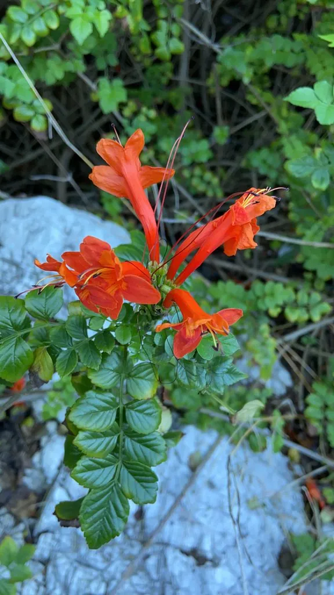

灌木与花木 · 植物界
硬骨凌霄 Tecomaria capensis

紫葳科硬骨凌霄属常绿灌木，花冠橙红至朱红色、漏斗状，花期长，是南方庭园中常见的观花与绿篱植物。
- 分类
- 门被子植物门纲木兰纲目唇形目科紫葳科属硬骨凌霄属
- 栖息环境
- 南非开普地区灌木丛，喜温暖、阳光充足，耐旱耐修剪
- 地理分布
- 原产南非；中国华南、西南及世界温暖地区栽培
- 保护级别
- IUCN 暂无评估；栽培普遍，野生种群稳定
物种志
硬骨凌霄为常绿灌木，高 2–3 米，茎干硬挺、多分枝，枝上常有小刺状突起。叶对生，奇数羽状复叶，小叶 5–9 枚，卵形，边缘具锯齿。总状花序顶生，花冠漏斗状，橙红色至朱红色，长 4–5 厘米，花冠檐部 5 裂，略呈二唇形；蒴果扁长，成熟时开裂，种子具膜质翅。
本种原产南非开普地区，喜温暖、阳光充足的环境，耐旱、耐修剪，在中国华南常作绿篱、花境与坡地绿化。它花期极长，在温暖地区几乎全年开花，是优秀的蜜源植物，能吸引太阳鸟与蝴蝶。硬骨凌霄不耐寒，北方需盆栽温室越冬；枝条硬挺，适合修剪成花篱或造型灌木。庭院栽培时需放在向阳处，并保持土壤排水良好。
形态与习性
- 株高2–3 米，茎干硬挺、多分枝
- 花期6–11 月，花橙红至朱红色
- 果期秋季，蒴果扁长
- 光照喜光，稍耐半阴
- 水分耐旱，忌积水
- 土壤排水良好的沙质壤土
- 主要用途花篱、花境与坡地绿化
趣味知识
- 硬骨凌霄的枝条硬挺，不像凌霄那样靠气生根攀援，因此得名“硬骨”。
- 它原产南非开普地区，是当地太阳鸟重要的蜜源植物。
- 在温暖地区它几乎全年开花，是花期最长的灌木花卉之一。
- 硬骨凌霄耐修剪，常被剪成整齐的花篱，花期时像一道橙红色的墙。